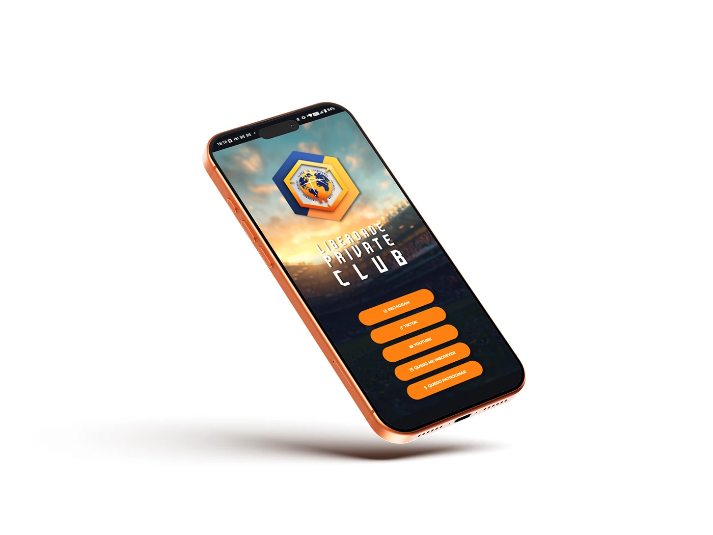
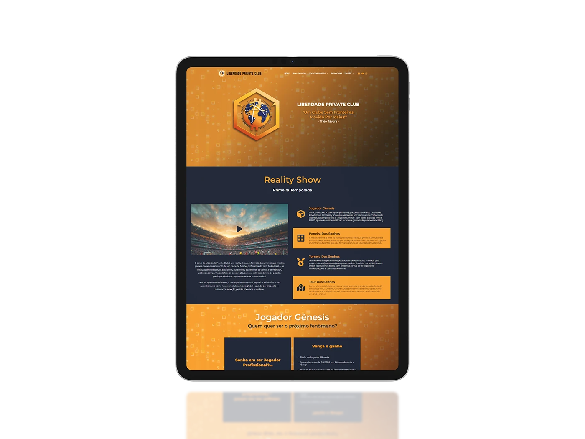
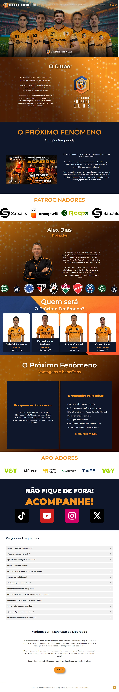
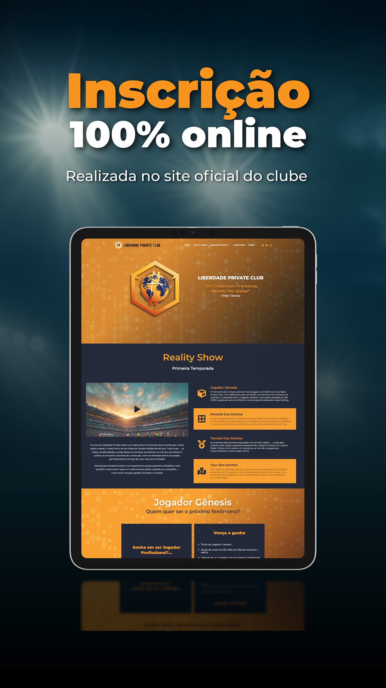

Esse é o Liberdade Private Club, um clube de futebol criado do zero na internet onde tive o privilégio de fazer parte dele.Desenvolvi o site do clube que começou como uma landing page, mas acabou se tornando a ferramenta essencial de seleção dos partici...



